Before selecting you need to know how much of what you see is genetic, how the traits relate to one another and how much can be gained. Block 8 computes the heritability of each trait with its exact interval, the coefficients of variation and the genetic advance; the genotypic, phenotypic and environmental correlations with path analysis; six selection indices and the genotypes they choose; and the expected gain of the recurrent-selection methods.
Block 8 works with genotypes evaluated in a trial: lines, hybrids, clones, families or the crosses of a diallel treated as entries. It takes from Block 3 the field analysis of each trait, with the appropriate design (complete blocks, α-lattice, augmented blocks or only means with an external error), and reduces it to the mean squares and cross products that the genetic parameters need. The generations of a cross are analyzed in Block 7, not here.
| Card | What it gives |
|---|---|
| 1 · Genetic parameters of every trait | σ²G, σ²GE, σ²e, plot-basis and entry-mean heritability with its exact interval, coefficients of variation and genetic advance |
| 2 · Correlations and path analysis | Genotypic, phenotypic and environmental correlations with their standard errors; direct and indirect effects on one trait |
| 3 · Selection indices | Smith–Hazel, base, restricted, proportional gains, desired gains and eigen, with the expected gain in each trait |
| 4 · Genotypes selected | The ranking of the genotypes with the chosen index, the rank sum or Elston’s index, and the realized gain |
| 5 · Recurrent-selection methods | The gain per cycle and per year of seven methods from σ²A, σ²D and the error |
The thread of the chapter is the trial of 13 maize hybrids from the examples gallery: three replications in complete blocks and 15 plant and ear traits (data distributed by its author under a free license). The correlations, paths and indices use five of them: plant height (PH), ear height (EH), grain weight per ear (KW), thousand-kernel weight (TKW) and kernels per ear (NKE). The screenshots use a selected proportion of 20%.
The 1 · Genetic parameters of every trait card has three controls: Proportion selected (from 1 to 50%), Selection intensity (that of an infinite population or the exact one for the genotypes of the trial) and Significance level, which sets the confidence interval. With several environments, Environment also appears, with the option of combining them all (Section 8.4).
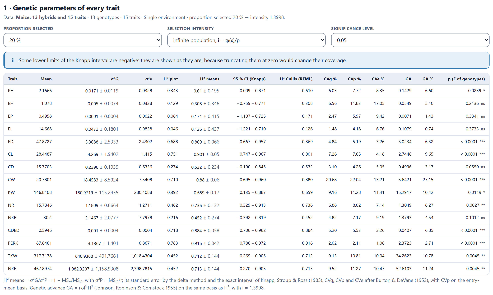
The components come from the expected mean squares of the random model: σ²G = (MSG − MSe)/r, with its standard error. From them two broad-sense heritabilities are read: that of a plot and that of a genotype mean, which is the one that matters when you select on means of r replications.
Grain weight per ear (KW) has σ²G = 180.97 ± 115.24 and σ²e = 280.41: its heritability is 0.392 per plot and 0.659 on means of three replications, with an interval from 0.135 to 0.887. Cob length (CL), grain percentage (PERK) and cob weight (CW) exceed 0.88; ear length (EL), at 0.126, has almost no genetic variance in these hybrids (p = 0.37).
The interval is the exact one of Knapp, Stroup and Ross (1985), which uses the F distribution of the ratio of mean squares instead of assuming normality. Its lower limit can be negative when the genetic variance is small; it is shown as it comes out, because truncating it at zero would change its coverage, and a warning reminds you. The genetic, phenotypic and environmental coefficients of variation (CVg, CVp and CVe) follow Burton and DeVane (1953); CVp is given on an entry-mean basis, like the heritability. The genetic advance GA (Johnson, Robinson and Comstock, 1955) is how much the mean would rise if the chosen proportion were selected on its phenotypic mean: for KW, 15.29 g, 10.4%.
The components, heritabilities, intervals and coefficients of variation of the 15 traits, in one environment and in four, equal those of an independent reconstruction to within 3.5 × 10−10, and those of KW agree with another restricted maximum likelihood implementation (σ²G = 180.97188, σ²e = 280.40877). In 3,000 simulations with H² = 0.75, Knapp’s 95% interval covered the true value 95.07% of the time.
The H² Cullis (REML) column is the heritability of Cullis, Smith and Coombes (2006), which Block 3 computes from the average variance of the differences between means. In balanced complete blocks it equals H² on means; with incomplete blocks, where the moment-based components are approximate, it is the recommended one, and a warning says so. With only means and an external error, the variance among means plays the role of MSG.
Below the table, a figure shows the entry-mean heritability of each trait with its interval, over the usual classes: low below 0.3 and high above 0.6 (the gray band). Intervals that go below −1 end in an arrow at the edge.
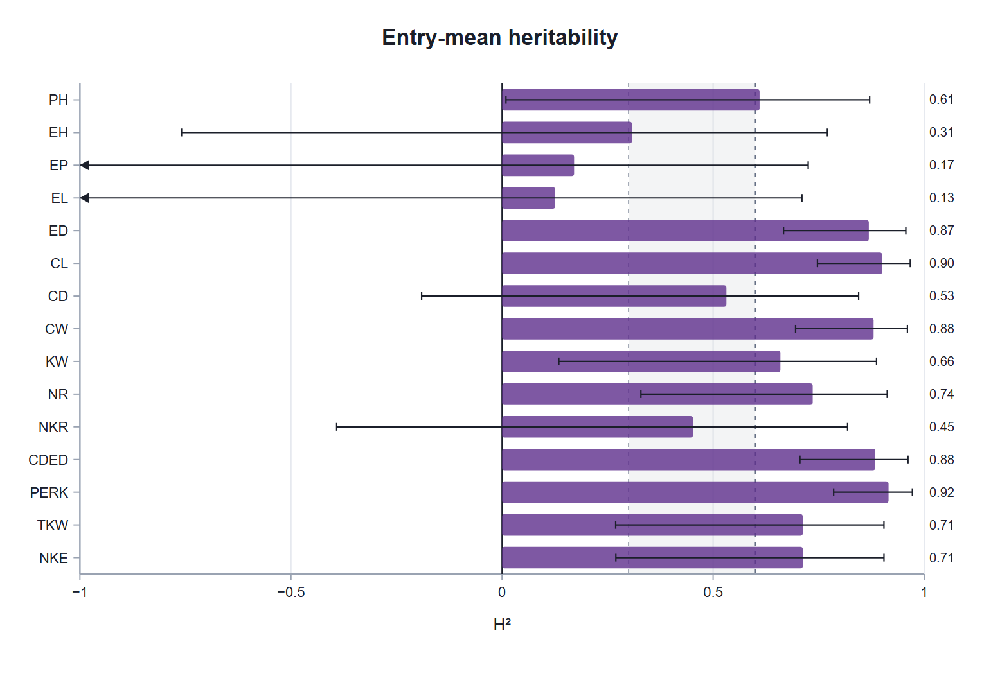
The selection intensity i is the superiority of the selected individuals in standard deviations. For an infinite population, i = φ(xp)/p, where p is the proportion selected. With few genotypes the real intensity is smaller: the exact for N of M genotypes option uses the expected mean of the N best of M normal values. The folded box Exact and finite selection intensity gives the table of values and compares, for the loaded trial, the exact intensity with the approximations of Burrows (1972) and Bulmer (1980).
| Proportion selected | 1% | 2% | 5% | 10% | 15% | 20% | 30% | 50% |
|---|---|---|---|---|---|---|---|---|
| Intensity i | 2.6652 | 2.4209 | 2.0627 | 1.7550 | 1.5544 | 1.3998 | 1.1590 | 0.7979 |
With 13 hybrids and 20% selected, 3 genotypes are chosen: the exact intensity is 1.2273, against 1.3183 for an infinite population with the same fraction (3 of 13). To choose one of 20 genotypes, the app gives 1.8675 exact, 1.8434 by Burrows and 1.8880 by Bulmer, the values of the example in Walsh and Lynch (2018).
With data from several environments, the Environment menu lets you analyze one or all combined. In the combined analysis the table adds σ²GE, the genotype × environment interaction, and the entry-mean heritability becomes H² = σ²G/(σ²G + σ²GE/e + σ²e/re) = 1 − MSGE/MSG, with e environments: the genotypes are tested against their interaction with the environments, not against the error.
The contrast with a single environment is the lesson of Figure 8.3. KW goes from H² = 0.659 to 0.204: its σ²G across environments is 30.3 ± 66.6 and its σ²GE, 343.0. What looked genetic in one location was, to a large extent, the response of each hybrid to that location. With a negative σ²G the heritability is reported as is, but the genetic advance is taken as zero and the card’s warning lists the affected traits. Block 9 analyzes that interaction in depth.
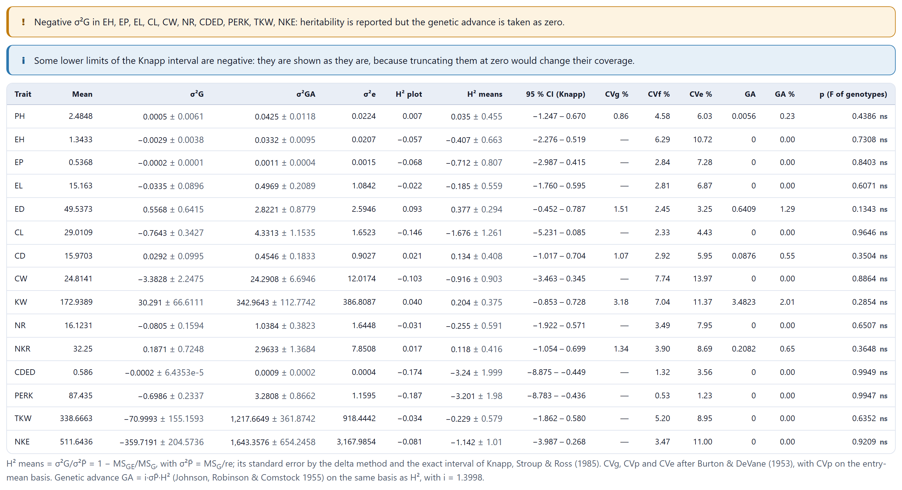
The 2 · Correlations and path analysis card begins with the boxes of the traits that enter the correlations and the indices; when a trial is loaded, the first six are ticked. The table brings together two matrices: above the diagonal, the genotypic correlations; below, in italics, the entry-mean phenotypic ones, each with its standard error.
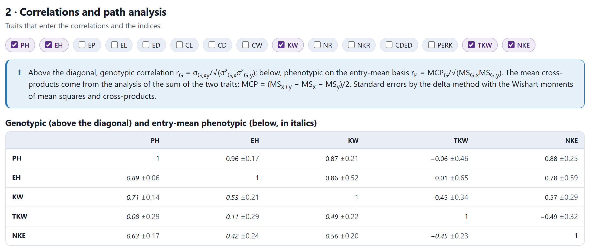
The covariances are obtained from the analysis of the sum of each pair of traits, in the same design as the traits: the mean cross product is MCP = (MSx+y − MSx − MSy)/2, and from it the genotypic, phenotypic and environmental covariances follow just as the variances follow from the mean squares. The standard errors are computed by the delta method, with the moments of the mean squares and cross products. The environmental (residual) correlations are in a folded box.
In the maize, the two heights go almost together (rG = 0.96) and both are associated with grain weight per ear (0.87 and 0.86): the tall hybrids yield more per ear. Thousand-kernel weight and kernels per ear are opposed (−0.49): ears with many kernels have smaller ones, the classic trade-off between yield components.
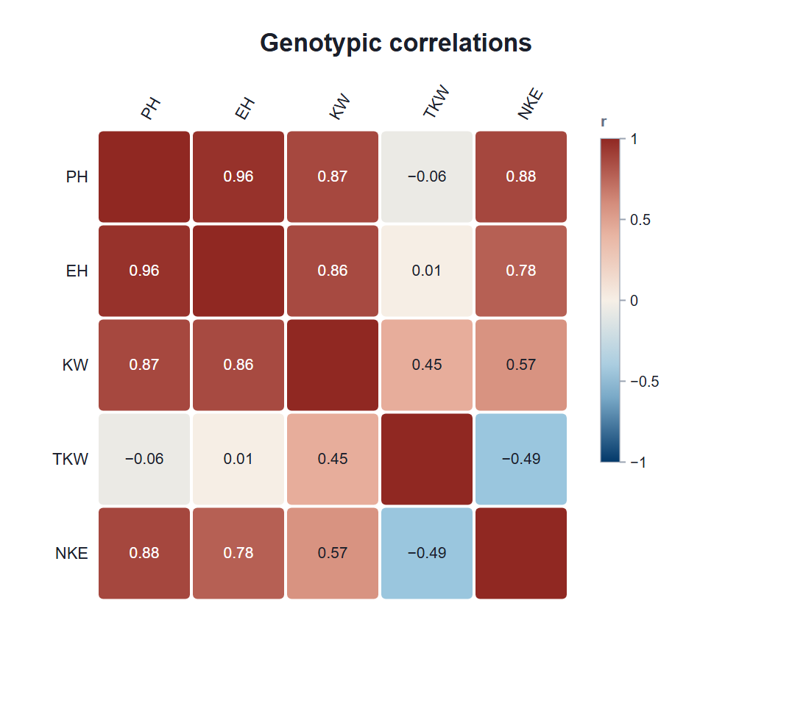
With few genotypes, a genotypic correlation can fall outside [−1, 1]: moment estimators are not bounded when σ²G is small. The app does not truncate it; it marks it and warns you. If σ²G is negative, the genotypic correlation does not exist and the cell is left empty. Records missing any of the chosen traits are left out, so that all the covariances use the same plots.
Wright’s path analysis splits the correlation of each trait with a dependent trait into a direct effect and indirect effects through the others: riy = pi + Σrijpj. The direct effects solve p = R−1r. You choose the dependent trait, the basis (genotypic or phenotypic correlations) and, if needed, a ridge constant k (Carvalho and Cruz, 1996).
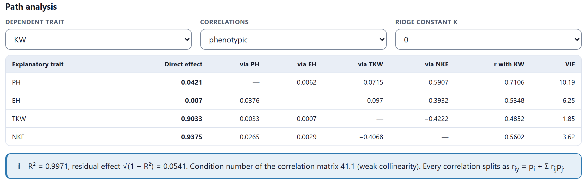
The result reads almost like an identity: grain weight per ear is the number of kernels times the weight of each one, and NKE and TKW have direct effects of 0.94 and 0.90, with R² = 0.997. Their total correlations with KW are smaller (0.56 and 0.49) because each carries a negative indirect effect through the other (−0.41 and −0.42). Plant height, on the other hand, is correlated with KW (0.71) almost only through kernels per ear (0.59): its direct effect is 0.04. The condition number, 41.1, indicates weak collinearity.
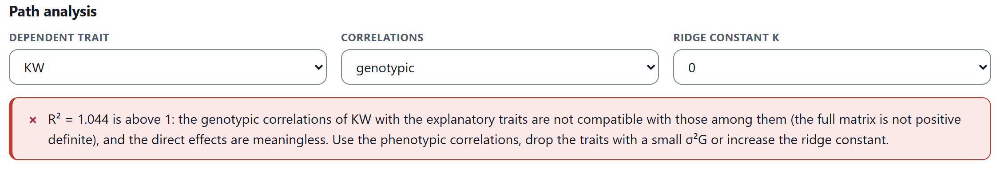
The direct effects only mean something if the correlation matrix is possible, that is, positive definite. With genotypic correlations from few genotypes this often fails, in two ways: among the explanatory traits there are impossible correlations (outside [−1, 1], or incompatible with one another), or the correlations with the dependent trait do not agree with those among the explanatory traits, and R² comes out greater than 1. In the maize the second happens: R² = 1.044. In both cases the app does not show the table and tells you what to do: use the phenotypic correlations, remove traits with small σ²G or increase the ridge constant. With strong collinearity (condition number above 100 or large VIFs), the direct effects are unstable even if the matrix is valid.
A selection index combines the traits into a single value, I = b′y, to choose the genotypes that most improve the aggregate genetic value H = w′g, where w are the economic weights. The 3 · Selection indices card begins with a table to define the objective: the direction of each trait, its economic weight, whether it must remain unchanged (restricted index) and the desired gain. The default weights are ±1/σP: the same importance for one phenotypic standard deviation of each trait.
All the indices work on an entry-mean basis, with the phenotypic matrix P = MCPG/r and the genotypic matrix G. For each one, the table gives σI, the response in H, the correlation ρHI between the index and the aggregate value, the heritability of the index, its efficiency relative to Smith–Hazel and the expected gain in each trait, ΔG = i·Gb/σI.
| Index | Coefficients | When to use it |
|---|---|---|
| Smith–Hazel | b = P−1Gw | The optimum for H if P, G and w are well estimated |
| Base (Williams, 1962) | b = w | When G and P are unreliable |
| Restricted (Kempthorne and Nordskog, 1959) | Smith–Hazel with ΔG = 0 in the marked traits | To improve without moving certain traits |
| Proportional gains (Mallard, 1972; Tallis, 1985) | Smith–Hazel with the gains in the requested proportion | When the proportion among gains matters, with its θ |
| Desired gains (Pesek and Baker, 1969) | b = P−1G(G′P−1G)−1d | Without economic weights: the gain of each trait is requested |
| Eigen, ESIM (Cerón-Rojas and colleagues, 2006) | Gb = λ²Pb with the largest λ² | Without weights: the most heritable combination |
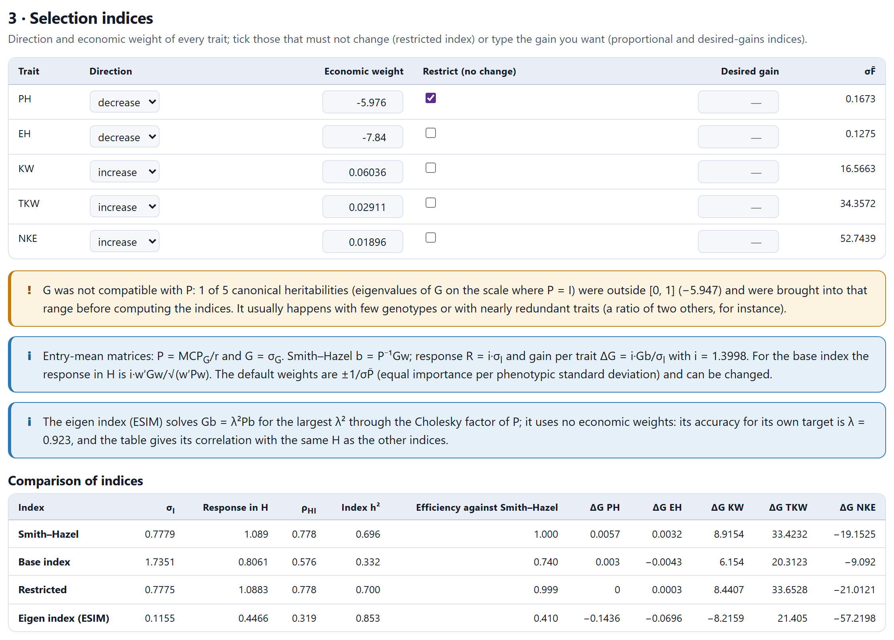
In the example, Smith–Hazel achieves ρHI = 0.778 and the base index, 0.576 (efficiency 0.740). With plant height restricted, the index loses almost nothing (efficiency 0.999): height barely changed with Smith–Hazel (+0.006 m).
Both indices raise TKW by 33 g and KW by 8 to 9 g, but lower kernels per ear by 19 to 21: because of the negative correlation between TKW and NKE, the index prefers heavier kernels to more kernels. The eigen index, which does not use the weights, seeks something else (its accuracy relative to its own objective is λ = 0.923); relative to the objective of the weights, ρHI = 0.319.
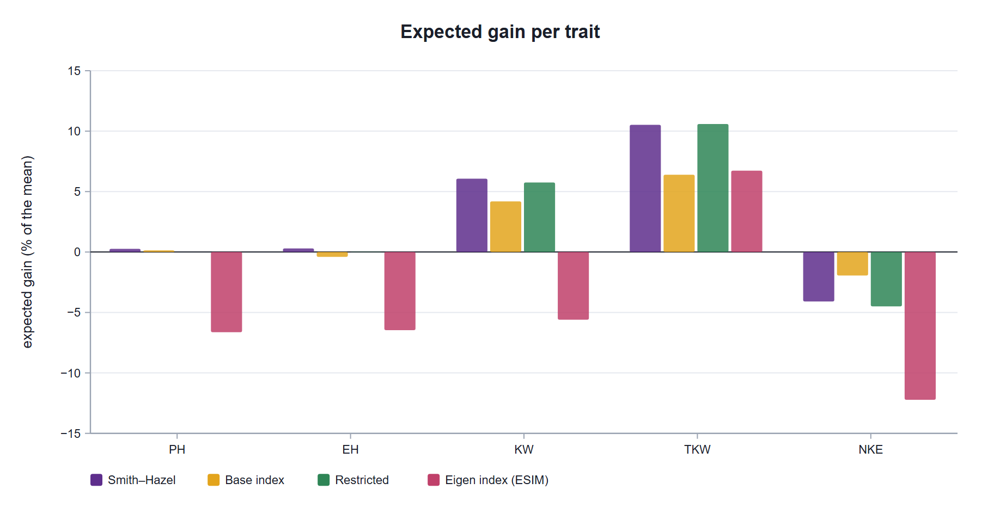
When you type a desired gain for any trait, the proportional-gains and desired-gains indices appear. If θ, which measures whether the proportional-gains index moves the traits in the requested direction, comes out negative or zero, a warning says so (Itoh and Yamada, 1987).
The genetic variance of any combination of traits cannot exceed its phenotypic variance. On the scale in which P is the identity, the eigenvalues of G are canonical heritabilities and must lie between 0 and 1. With few genotypes or with nearly redundant traits they fall outside: in the example, one equals −5.95. If this is not corrected, Smith–Hazel gives accuracies greater than 1. The app brings those heritabilities into the interval [0, 1] before computing the indices, the idea of Hayes and Hill (1981), and says how many it changed; if P itself is not positive definite, it first bends it with Schaeffer’s (2014) method. A trait with σ²G ≤ 0 keeps its phenotypic information, but its genotypic row and column are set to zero.
The folded box Coefficients of every index and Smith–Hazel detail gives the coefficients b of all the indices and, for Smith–Hazel, the share of the economic value contributed by each trait and the accuracy that would be lost if it were removed.
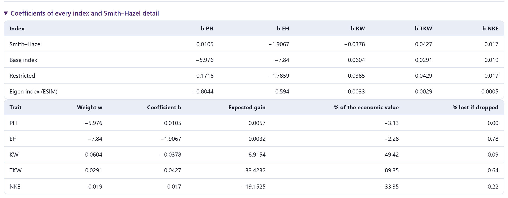
A coefficient can have the opposite sign to its weight: that of KW is negative even though you want to raise grain weight, because TKW and NKE already carry that information and the index corrects what KW adds. That is why the coefficients are not interpreted one by one; what matters are the expected gains.
With the matrices of the book by Cerón-Rojas and Crossa (2018), the Smith–Hazel index gives b = (0.555, −1.063, 1.087), R = 19.21 and ρ = 0.894; the restricted and proportional-gains indices reproduce its examples (R = 6.87 and 16.717, θ = 6.213). The maize indices, including the eigen index measured against the same H, agree with an independent reconstruction, and none of 2,000 random indices exceeds the accuracy of Smith–Hazel.
The 4 · Genotypes selected card ranks the genotypes with the index chosen in Rank with: any of those of the previous card, the rank sum of Mulamba and Mock (1978) or Elston’s (1963) multiplicative index, which need neither P nor G. As many genotypes are selected as the chosen proportion indicates; the checks do not enter the selection.
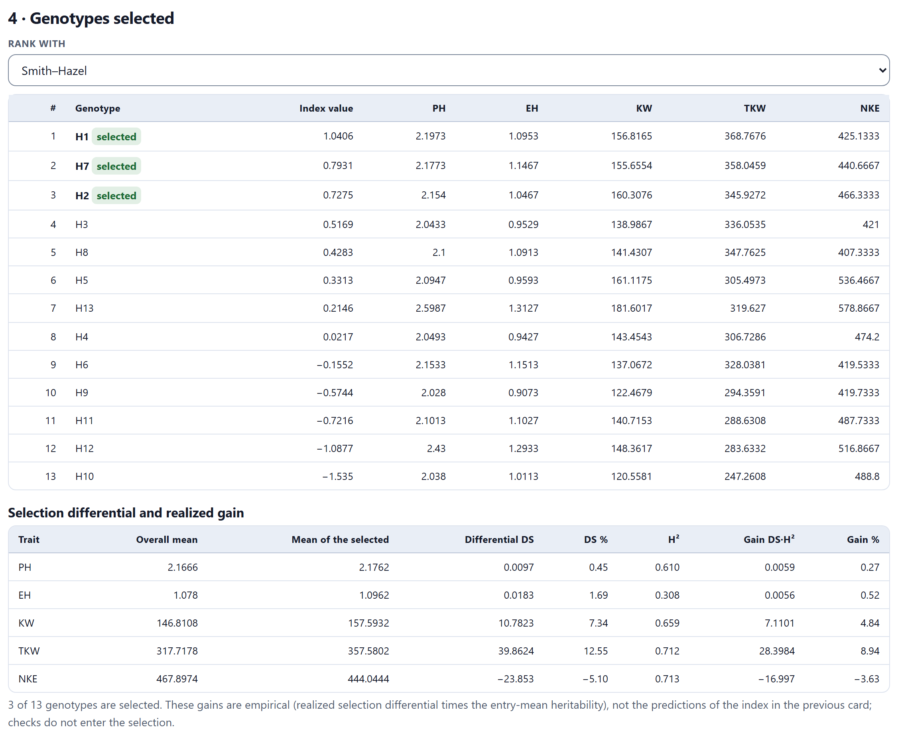
The three chosen hybrids have ears with heavy kernels (358 g per thousand kernels against 318 for the mean) and average height. H13, the one with the highest grain weight per ear (181.6 g), ranks seventh because it is the tallest (2.60 m plant and 1.31 m ear height): the index charges for the height you wanted to lower. The table below gives, for each trait, the selection differential and the realized gain SD·H²: KW rises 7.1 g (4.8%) and TKW 28.4 g (8.9%), while NKE drops 17.0 kernels.
These gains are empirical: the differential of the genotypes actually chosen, multiplied by the heritability. They are not the predictions of the index, which assume a normal, infinite population; with 13 genotypes it is normal for them to differ.
The 5 · Expected gain of the recurrent-selection methods card compares seven recurrent-selection methods in an outcrossing population with the general formula Gc = i·c·Cov/σP (Sprague and Eberhart, 1977; Fehr, 1987): the covariance between the unit evaluated and the unit recombined, over the phenotypic standard deviation of the selection unit, with the parental control c (½ if only one parent is selected, 2 if selfed seed of the selected plants is recombined).
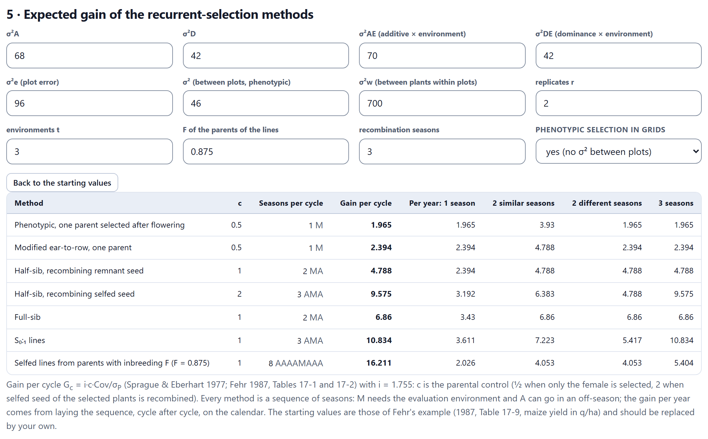
The input values are σ²A, σ²D, their interactions with the environment, the plot error, the phenotypic variance among plots and the variance among plants within plots, with the replications, the environments, the inbreeding of the parents of the lines and the recombination seasons. If Block 6 estimated σ²A and σ²D, the card takes them from there; the other starting values are those of Fehr’s example and you should replace them with your own. Back to the starting values restores them.
The gain per year results from fitting the sequence of each method, cycle after cycle, into the calendar: one season a year, two equal seasons, two different ones (one in the evaluation environment and an off-season one) or three. Per cycle, the methods with selfing gain more (16.2 the parent lines with F = 0.875, 10.8 the S0:1), but they need more seasons; per year, with two different seasons, full-sib selection gains the most (6.86).
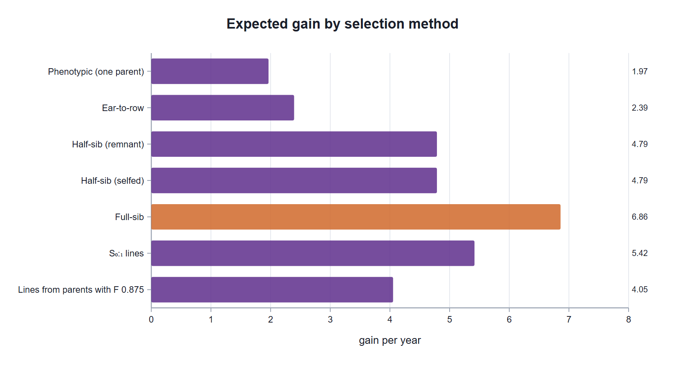
With 10% selected, the gains per cycle are 1.97, 2.39, 4.79, 9.58, 6.86, 10.83 and 16.21 q/ha; Fehr (1987, table 17-9) publishes 2.0, 2.4, 4.8, 9.6, 6.8, 10.8 and 16.2 with k = 1.75 (the app uses 1.7550). The gains per year with one, two equal, two different and three seasons agree with those of the same table.
It is a prediction. The real response is smaller if there is epistasis, the Bulmer effect (selection reduces the additive variance), drift in small populations or interaction with the environment that was not estimated.
The 6 · Assumptions, formulas and references card summarizes the formulas of each card with their references. Results (.xlsx) downloads the parameters, the correlation matrices and P and G, the indices, the selection ranking and the recurrent-selection methods, each on its own sheet. Every figure has its download panel.
Continue takes you to Block 9 (genotype × environment) if there are several environments, or to Block 10 (BLUP) if there is only one. The back button returns to the block that analyzed the design: Hayman–Jinks for Griffing diallels, Mating designs for the North Carolina designs, the triple test cross, line × tester and partial diallels, and Data for genotype trials.